志津見ダムの上を歩きました。
2023/06/11
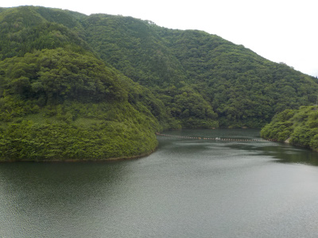
ポピーまつりの帰りに志津見ダムに寄りました。
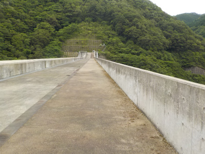
ダムの高さが高いので、下をのぞくと怖かったです。
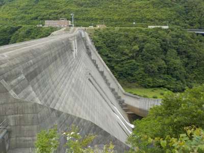
志津見ダム見学会・巡視艇体験ってのもやっていましたが、予約がほぼ埋まってました。船に乗ったりダムの中に入りたい人は、早い時間に行った方がよさそうです。
島根県飯石郡飯南町志津見
2023/06/11

ポピーまつりの帰りに志津見ダムに寄りました。

ダムの高さが高いので、下をのぞくと怖かったです。

志津見ダム見学会・巡視艇体験ってのもやっていましたが、予約がほぼ埋まってました。船に乗ったりダムの中に入りたい人は、早い時間に行った方がよさそうです。
2023/06/11
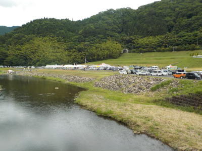
普段ホームページ用の写真を撮っているので、だんだん写真に興味を持つようになりました。
ポピーまつりではモデルさんの写真撮影会があるので、どんな感じで撮影会をされているのか見に行きました。
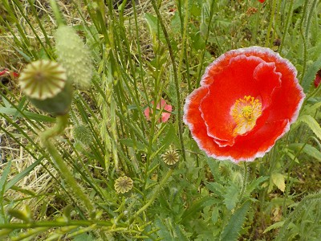
ポピーはだいぶ終わっていて、種が出来ようとしていました。
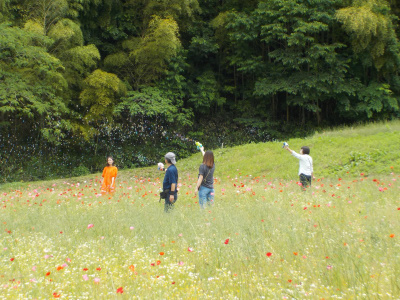
モデル撮影会はこんな感じです。オレンジの服がモデルさんで、関係者3人がシャボン玉を作ってポップな感じの雰囲気を作られていました。
多くの人が横一列に並んで撮影していたので、近づいてもこの距離になりました。望遠レンズが必要ですね。
知らない人を撮影することって肖像権とか犯罪者に疑われるとかで出来ないので、ドウドウと撮れるのはいいですね。
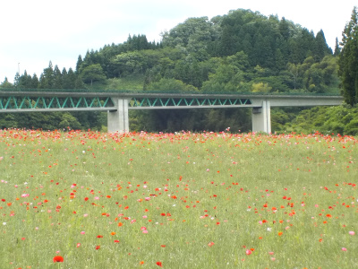
ポピー畑です。絶好調の時は凄かったんだろうな。
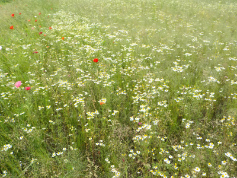
カモミールも沢山咲いていました。
2013/02/24
ダムの横は車で通るんですが、管理支所に寄ったのは初めてです。
駐車場があるし、開けてて公園のような感じでした。
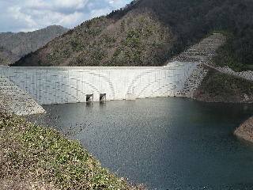
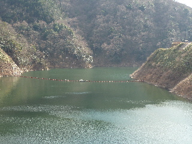
ダムやダム湖がよく見えました。
ここってトイレがあるんですね。
近くに「うぐいす茶屋」があるんですが、そこがオープンしていない時間や、お休みの時にはこっちでトイレ休憩するといいかも？って思いました。
2011/10/09
東三瓶フラワーバレーであった、第21回コスモス祭に行きました。
緑が多くていい景色ですね。
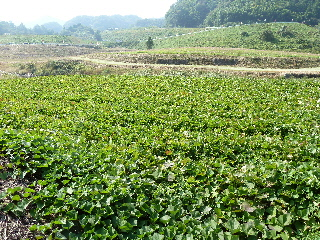
これは芋掘りがあったイモ畑です。
結構広いです。
芋掘り開始時には人が沢山集まりましたが、広いので窮屈にはなりませんでした。
大きいの小さいのあわせて、16個のサツマイモをビニール袋に入れて持って帰りました。
300円でこれだけ取れれば十分でしょうって思いました。
返ってから早速一つ食べてみたんですが、あっさりめの味でした。
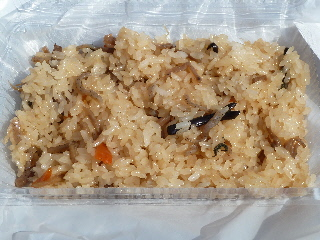
天気が良かったので、今回も大勢の人で賑わっていました。
お蕎麦が食べたいって思っていたんですが、テーブルが空いていなくて座れなかったので、手軽に食べれるご飯もの（山菜おこわ）を地べたに座っていただきました。
暑かったので、濃いめの味が丁度良かったです。
次に行くことがあったら、早めに行ってステージの見えるテーブル席を確保したいです。
2010/06/20
第19回ポピー祭 志津見ダム湖まつりです。
ダムが完成したのでお祭がなくなるなんて話もありましたが、今年もありました。
熱気球に乗れるってあったので、乗ってみたいって思い行ったんですが、風が強かったために気球が上がっていませんでした。ガッカリでした。
でも龍舞っていうのが見れました。
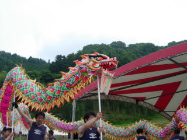
珍しいものが見れて良かったです。
その後雨が降ってきたので、ササッと買い物をして帰りました。
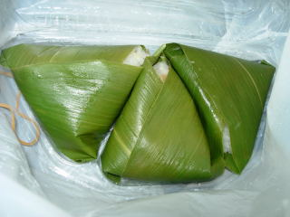
笹巻き寿司です。
しっかりと味が付いててウエットな感じのお寿司でした。笹の風味が良かったです。
ポピーは会場じゃなくて、上の方の駐車場で咲いていました。
2009/10/11
コスモスは絶好調ではなかったですが、天気もよく、お客さんも多く賑やかなお祭でした。
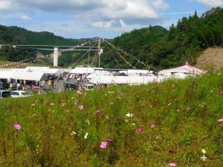
ポピー祭りの時と同じで、飯南や奥出雲の商品が色々販売していたので、美味しいお昼ご飯になりました。
さつまいも掘りをしたんですが、1袋詰め放題で300円なのでとってもお得でした。掘る道具なんかはなくて自前だったため、用意してなくて掘るのが大変だったんですが、軍手が車に入っていたのそれを使って掘りました。次に行く時はちゃんと道具を持って行こうと思いました。
特大のさつま芋が沢山あったので、掘ってて楽しかったです。
秋の行楽にお勧めのイベントですね。
2009/06/14
お客さんも多いですし、ステージイベントも色々あるし、うまいものコーナーも多くのお店があるので、賑やかで楽しいイベントでした。山里で環境のいい所に、ポピーの花まで咲いているので最高のロケーションです。
街中のイベントは行きやすくて楽ですが、建造物内のイベントと自然の中のイベントでは気分が全然違いますね。行って良かったって思いました。
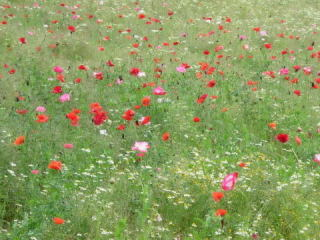
ポピーの写真です。棚田みたいな所でした。
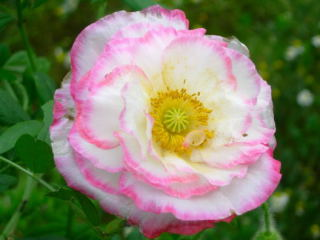
ちょっと変わった派手なポピーもありました。
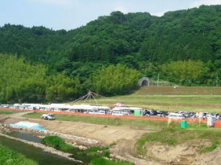
遠くから写したの会場の様子です。工事現場の河川敷に沢山のテントが並んでます。
飯南の商品が色々販売していたんですが、やまめの塩焼き、赤名の牛丼、コロッケを食べて帰りました。それぞれ美味しかったです。